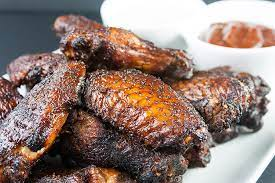

Wings

Smoked Chicken Hot Wings
These smoked hot wings are grilled until tender and delicious! Serve with celery sticks and blue cheese dressing.
Indgredients
- 1 tablespoon kosher salt
- 1 ½ teaspoons ground black pepper
- 1 ½ teaspoons Cajun seasoning
- 2 ½ pounds chicken wings
Procedure
- Heat a smoker to 225 degrees F (110 degrees C) according to the manufacturer's directions.
- To make the dry rub: Mix 1 tablespoon salt, pepper, and Cajun seasoning in a small bowl; sprinkle over chicken
wings.
- Place chicken wings, unstacked, onto wire racks. Place the racks into the smoker. Add wood chips according to the
manufacturer's directions; smoke chicken wings in the preheated smoker for 1 hour.
- Preheat an outdoor grill for medium-high heat and lightly oil the grate. Transfer smoked wings to a large bowl; stir
in 1/2 of the sauce until wings are evenly coated.
- Cook wings on the preheated grill until skin is browned and crispy, about 4 to 5 minutes per side. An instant-read
thermometer inserted near the bone should read 165 degrees F (74 degrees C). Transfer to a large bowl and stir in
remaining sauce until wings are well coated.